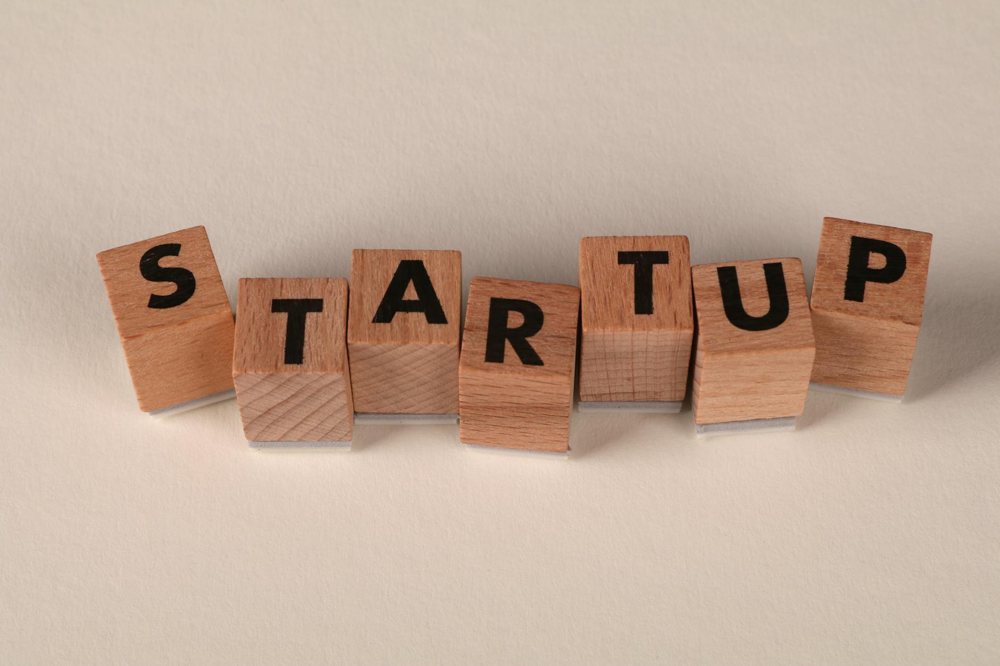

一张写着 10 亿美金的合同，内容是"啥也不保证"
SpaceX 承诺今年付给 Cursor 10 亿美金。换到手的不是 Cursor 的股份，不是产品独占权，甚至不是"不许你再跟别人合作"的排他条款。换到手的是一项权利——今年年底之前，SpaceX 可以决定要不要花 600 亿美金把 Cursor 整个买下来。
决定要买，那 10 亿算定金，后续再补 590 亿。决定不买，那 10 亿就叫"合作费"，双方解除,两不相欠。
这个东西在金融界有个成熟的名字：看涨期权。执行价 600 亿，权利金 10 亿，到期日 2026 年底。
a16z 的 Martin Casado 之流可能会跳出来说这玩意儿不新鲜,M&A 里玩了二十年了,叫 option agreement。这话没错。但过去的 M&A option,权利金通常是几百万到一两亿美金,目的是"我们快谈成了,你在这段时间别去谈别人"。
Cursor 这次把权利金调到了 10 亿美金。
这个数量级,不是"排他费",是一轮 VC。英伟达投一家公司战投,一次顶天也就五六亿;a16z 一期旗舰基金才 35 亿。Cursor 一份合同吸进来的权利金,已经比大多数 AI 创业公司一整轮融资还多。
更关键的是——这 10 亿是不稀释的。
传统 VC 投 20 亿,你要让出相应的股权;Cursor 这 10 亿,不用给马斯克一个董事席,不用让一张普通股,甚至连"持股人"的名字都不用写进去。马斯克拿的是合同,不是股票。
一个"不承担股东责任"的股东,一份"不交付任何实物"的合同,一张可能根本不会被执行的期权。Cursor 就这么拿了 10 亿。
这就是为什么说 Cursor 的操作比 SpaceX 更漂亮——SpaceX 花了 10 亿,留下了一个不确定的未来;Cursor 收了 10 亿,留下了确定的现金流。
Cursor 一夜之间,挤掉了全世界 VC
4 月 22 日这份公告出来之前几个小时,Cursor 正在做另一件事——签 20 亿美金的 Series E 融资。
领投的是 a16z 和 Thrive Capital,跟投名单上有英伟达、Battery Ventures。估值 500 亿美金。
这是 Cursor 的第五轮融资。把它的估值轨迹拉成一条线,你会看到一个 AI 时代独有的加速度:
2024 年 8 月,Series A,估值 4 亿;
2024 年 12 月,Series B,估值 25 亿;
2025 年 5 月,Series C,估值 90 亿;
2025 年 11 月,Series D,估值 293 亿;
2026 年 4 月,Series E 原定估值 500 亿;
SpaceX 的期权合同,执行价 600 亿。
20 个月,估值涨了 150 倍。创始人 Michael Truell 今年 24 岁,从麻省理工辍学,4 年前建了这家公司。这个速度不是成长,是通货膨胀——钱贬值的速度赶不上 Cursor 估值升值的速度。
真正刺眼的不是这条曲线,是曲线最末端 Series E 的结局。
这轮 20 亿融资,直接被 SpaceX 的期权合同干掉了。原本 a16z 和 Thrive 要投的 20 亿,变成了 SpaceX 付的 10 亿 "合作费"。数字看起来 Cursor 少拿了一半,但账不是这么算的。
站在 Cursor 创始人角度算一笔账:
走 Series E 路径:拿 20 亿现金,但按 500 亿估值释放 4% 股权。如果最终 Cursor 被 SpaceX 以 600 亿收购,这 4% 对应 24 亿——相当于用未来 24 亿换了现在 20 亿。 走 SpaceX 期权路径:拿 10 亿现金,不释放任何股权。如果 SpaceX 年底真买,600 亿全归现有股东,创始人团队那部分股权一股不少。如果 SpaceX 不买,10 亿当"友情赞助"留下,Cursor 该融 Series E 还是可以融,估值说不定因为"SpaceX 都愿意出 600 亿"而被推得更高。前一条路,相当于给 VC 一张"未来以 500 亿估值进场"的低价票;后一条路,相当于管 SpaceX 要了一张"要不要以 600 亿估值进场"的高价期权,权利金 10 亿,然后让 VC 去等下一轮。
同样是谈钱,Cursor 这次选了卖期权,而不是卖股权。这里最骚的操作是:Cursor 根本不用选。
有消息说,SpaceX 的合同是在 Series E 即将签完的最后几个小时里挤进来的——Cursor 是在"两头谈"的状态下让马斯克截胡的。换句话说,Cursor 是故意让 SpaceX 把 a16z 挤掉的。
a16z 和 Thrive 投了 Cursor 四年,从 A 轮就在。结果轮到最大的 E 轮时,Cursor 把这张票给了一个从来没投过的人,而且给的不是股票,是合同。
SpaceX 不是在买 AI 能力,是在买"别人买不到 Cursor"
现在换个视角。马斯克为什么愿意花 10 亿买这张期权?
表面答案是:xAI 需要一个 AI 编程入口来跟 OpenAI 和 Anthropic 打,Cursor 是目前体量最大的那个——年化收入 20 亿美金,百万级日活开发者,Fortune 500 里一半的企业都在用。
这个答案不算错,但不完整。
如果马斯克想要的只是"一个 AI 编程产品",xAI 自己做一个不行吗?Grok 已经有代码能力了,xAI 手里有 Colossus 超算,相当于 100 万张 H100 的算力,投几百人团队写个 Cursor 的克隆版是几个月的事。一年成本都不用 10 亿。
问题是,Cursor 最值钱的不是代码,是那 100 万每天用它的开发者。
开发者迁移,是软件行业里最难的事。一个用了两年 Cursor 的工程师,他的快捷键、他的项目配置、他的 prompt 习惯、他团队的 workflow,都长在 Cursor 里。你让他换一个功能一样、甚至更好的工具,他可能会拖一年才试一次。
马斯克真正怕的,不是"xAI 没有 Cursor",是"别人有 Cursor 而 xAI 没有"。
OpenAI 和 Cursor 之前就在深度合作——Cursor 是 GPT 系列模型最大的第三方应用之一。Anthropic 更不用说,Claude 是 Cursor 的默认推理引擎之一。如果哪天 OpenAI 或者 Anthropic 出手把 Cursor 吃下来,xAI 在开发者场景就彻底失势。
10 亿美金,买的是"这 8 个月里 Cursor 不会跑去跟别人签排他"的时间。换句话说,马斯克付的是"保险费",不是"购买款"。
保险的逻辑,不是"我一定会出险",是"我不能承担不买这个保险的后果"。马斯克现在能不能买得起 600 亿美金的 Cursor,要看 SpaceX 今年夏天那个万亿美元的 IPO 能不能成。IPO 成了,可以用股票支付;IPO 不成,就算把期权 throw out,至少 10 亿买到了这段时间 Cursor 不会跟 OpenAI 谈。
这个逻辑最阴的地方在于:马斯克实际上买的是一项"反竞争工具"。
竞争对手拿不到 Cursor,比马斯克自己拿到 Cursor 更重要。
Cursor 当然懂这个。Cursor 知道 SpaceX 付这 10 亿不是为了产品协同,是为了把自己跟 xAI 绑成"准一家"。而 Cursor 选择配合,是因为这单生意它稳赚——钱到账,独立性保留,行业里再也不会有 AI 大厂敢跟它谈"独家"了(反正你已经跟 SpaceX 绑了)。
这叫,用对方的焦虑给自己定价。
AI 公司第一次学会把自己"金融化"
把 Cursor 这次的操作放回一个更长的时间线里看——AI 行业的估值机制,正在从"融资轮"切换到"金融合约"。
过去四年,AI 独角兽的成长公式是固定的:拿融资→堆估值→再拿融资→再堆估值。OpenAI 从 290 亿美金估值一路被融到 8400 亿,Anthropic 融到 3800 亿。每一轮都是"更多现金换更少股权",VC 在赚前一轮的差价,创始人在稀释。
这个模型能跑多久?取决于两件事:一级市场愿不愿意一直投,以及二级市场愿不愿意接盘 IPO。2026 年年初,这两件事都开始松动。软银、Andreessen Horowitz 内部都有声音说"AI 融资轮太过热,估值已经脱离现金流"。二级市场对 OpenAI 潜在 IPO 的消化能力也被质疑过很多次。
Cursor 这次做的事,等于是在说:谁说 AI 公司必须走融资轮?我可以直接卖期权合约给战略对手。
这个路径的好处列一下:
- 卖期权权利金不稀释股权,融资轮稀释。
- 卖期权一次交易可以同时锁定"现金流入"和"最大退出估值",融资只能解决现金流入。
- 卖期权的对手盘是战略方(比如 SpaceX),他们愿意为"竞争不利风险"付溢价;融资的对手盘是 VC,他们只愿意为"财务回报期望值"付价格。
- 卖期权可以制造一种"有大厂背书"的市场信号,下一轮融资(如果还要融)估值会更高。
这事一旦跑通,会被复制。
未来三个月,你大概率会看到这些新闻:某家 AI 模型公司宣布跟某家硬件大厂"签署战略合作协议",金额不小,但没提股权;某家 AI Agent 独角兽宣布跟某家云厂商"建立独家合作",收取"合作费",同时保留被收购的可选性;某家 AI 数据公司被传要融资,但实际签的是"优先议价权合同"。
这些都是 Cursor 模版的变体。
传统意义上的"融资",会变成一个越来越小众的选项。真正聪明的 AI 创始人会意识到:VC 不是唯一的出钱方,而"出钱"也不是唯一的交易形式。你可以卖股权,可以卖期权,可以卖排他权,可以卖"不跟别人合作的承诺"。每一种都是不同的流动性工具。
前 30 年创业公司的财务结构,就两档:融资,或者卖身。未来 10 年,你会看到 30 档。

回到开头那个问题。这次真的是马斯克赢了吗?
马斯克花了 10 亿美金,拿到了一张"可能买到 Cursor"的权利——执行它需要再花 590 亿,不执行 10 亿就当打水漂。
Cursor 拿到了 10 亿美金现金流、零股权稀释、一个"SpaceX 等着买我"的市场标签、继续独立经营的自由、以及把 a16z 和 Thrive 挤到观众席的权力。
这场交易,一方用现金买了"可能",另一方用"可能"换了现金。
看起来是 SpaceX 开出的霸王条款。
但你再想一次——谁会开开心心地,付 10 亿美金,换一张可能被撕掉的纸?
不是马斯克拿下了 Cursor。
是 Cursor 让马斯克觉得,"自己有机会"拿下 Cursor,值 10 亿美金。
从今天开始,融资这个词对最聪明的那批 AI 公司来说,已经不够用了。